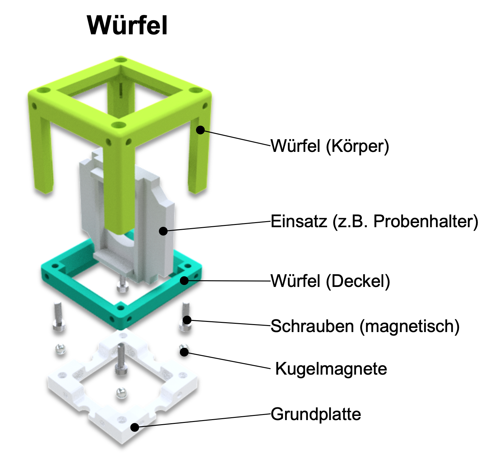
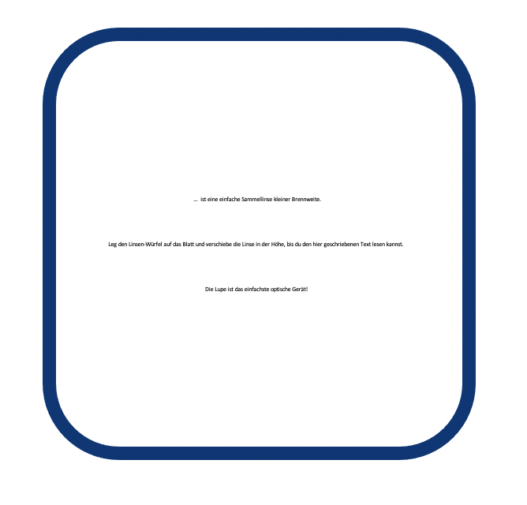
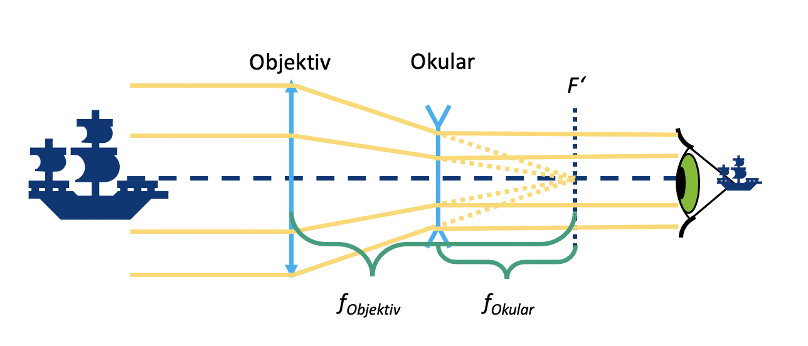
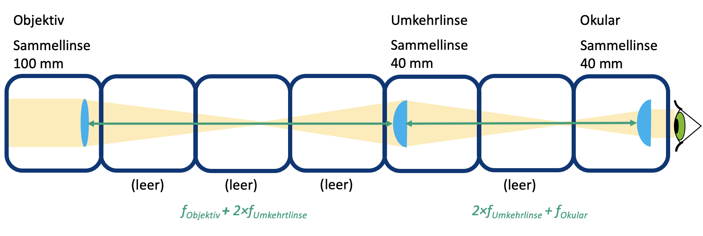
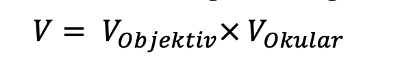
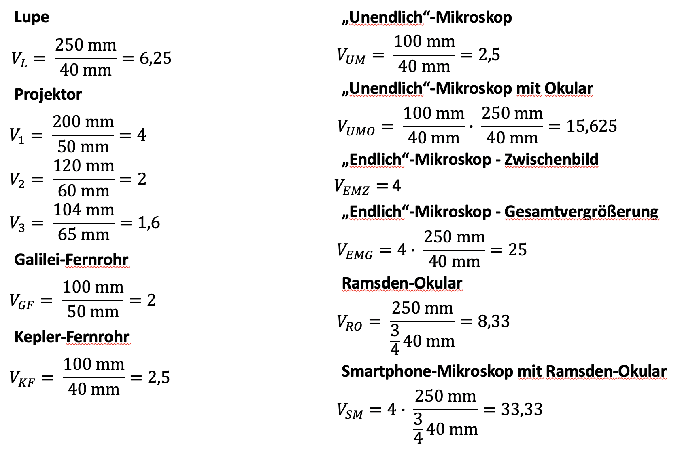

Sample holder: holds an object in a cube\
Lens: affects the way light is propagated (spread out)\
Mirror: Reflects the light\
Microscope objective: a special lens system that enlarges an object
The core element of the UC2 project is a simple cube.
The cube consists of two halves and houses a sliding insert.
The insert can hold various optical components (e.g. lenses, mirrors), which means that different functions can be implemented with each cube.
Cube type 1: injection molded with plug connection
Baseplate

Baseplate
The cube can be mounted on a base plate. The base plate modules can be put together like a puzzle.

The UC2 cube can also be 3D printed. It looks the same as the injection molded model, but here it consists of a cube lid and the cube body, which are held together with screws. The screws are great for being put on the magnetic plate. By combining different cube modules, different optical structures can be easily assembled. A new function can be added with each dice. Your creativity knows no limits.
Cube type 2: 3D printed with magnetic connection
Dice

Base plate with magnets
In the 3D printed base plate there are small spherical magnets on which the cubes are placed.

Want more dice? Then you can build them yourself. You can find everything here
Make sure that the cubes are placed correctly on the plate and are not tilted. In the end it is important that the inserts are in the right place.

If you don't see a sharp image, move the inserts (e.g. lens) until you see it clearly. The green arrow in the picture shows you how to do this.

Experiment If you see this block, there is something to experiment with! You can place a UC2 cube on this block. | |
| Explanations: If you see this icon, there's something to learn! |
Invoices: There is something to calculate here. Take a pen and paper and start puzzles. | |
| Caution: Do not touch the glass surfaces with your fingers! |
| Cleaning the lenses: If you have already touched the lens, you can clean it with a glasses cloth. |


Take one or more of the cubes that have a lens in them and look at the UC2 symbol shown here. Hold the cube in your hand and change the distance between the lens and the image.
In ray optics, light is represented as a bundle of rays (arrows), which simplifies the physical properties of light. A ray has a direction and is therefore drawn with an arrow. A lens "refracts" the beam, changing its direction.
The focal length of a lens corresponds to the distance from the lens to the focal plane on which the focal point lies. It is given in millimeters (f = mm).
Converging lenses


Converging lenses refract the rays of light traveling parallel to the optical axis at a point called the focal point.
Diverging lenses


The diverging lenses refract the rays of light traveling parallel to the optical axis as if they originated from a point called the "virtual" focus.
You can find the focal length of the lens as a printed number on the lens holder. The MiniBOX receives a 100mm converging lens, two 40mm converging lenses and a -50mm negative lens. The numbers indicate the focal length.
The converging lens is also called a positive or convex lens. The middle part of the lens is always thicker than the edge.
The converging lens enlarges the image. The magnification is different for the 40mm lens and the 100mm lens. The image can be upright or inverted.
The negative lens (spreading lens) is sometimes also called a negative or concave lens. The middle part of the lens is always thinner than the edge.
With the negative lens (here: -50 mm lens) the image is always reduced and always upright
We assume that our lenses are so-called "thin lenses". This means we can consider them as one plane and not care about their thickness. This makes explanations and calculations much easier.
Did the answers raise any more questions? Then drive to find out exactly how lenses work...
Now take the lentil cubes. With the right lens, try to decipher the focal length information in the cubes shown. Move the lens over the writing until it is the same size as the "UC2" text.

Can you see the text the same size and orientation as the "UC2"? What happens when you change the distance between the lens and the image?
What happens if you use a lens with the wrong focal length?

Let's take the converging lens as an example. We start with an object (green arrow) and see what happens to the rays that start from the top. There are infinitely many rays in all directions, but for drawing the figure the following three rays will suffice:
- The centre beam (orange) passes undisturbed through the center of the lens.
- The focus ray (yellow) also starts from the tip of the arrow, but goes through the object-side focus at focal length f. After the lens, it continues at the same height, but now parallel to the optical axis.
- The parallel beam (red) initially runs parallel to the optical axis, but is then refracted at the lens in such a way that it passes through the focal point on the image side at focal length f.
The image is formed where all the rays intersect. The principle is used for all points or the rays of an object emanating from them. Depending on which lens is used and depending on the position of the object, the properties of the image change, such as size, orientation and position.
In the case of the negative lens, we use the same method to image the ray path. Unlike the case of the converging lens, the image is always reduced and virtual. Magnification depends on the position of the object in front of the lens. Unlike the converging lens, the image is created on the object side and is therefore called a virtual image. You can see it directly with your eyes but not project it onto a screen.

The way a lens creates an image is predictable by knowing the focal length of that lens. Therefore, a certain distance must be maintained so that you can see the writing with the specified lens on the previous sheet.
The magnification and the location where the image is formed depend on the focal length of the lens and the distance between the lens and the object.
With the diverging lens (f = -50 mm) you always see a reduced virtual image. A virtual image can only be viewed with the eye. So far we only have virtual ones
seen pictures.
Take the UC2 lens cube with focal length f=40mm and use it as a magnifying glass.

Can you read the small letters through the converging lens? What is written there?
With the converging lenses, the image and the magnification depend on the position of the object.

If the distance between the object and the lens is more than twice the focal length of the lens, then the image is...
- Vice versa
- Swapped sides
- Reduced
- Real
If the distance between the object and the lens is exactly twice the focal length of the lens, then the image is...
- Vice versa
- Swapped sides
- Same size
- Real
If the distance between the object and the lens is more than the focal length and less than twice the focal length of the lens, then the image is...
- Vice versa
- Swapped sides
- Magnified
- real
Object distance (g)
The distance between the object and the lens plane is called g.
Image width (b)
The distance between the lens plane and the image formed by the lens is denoted as b.
The converging lens can produce a real image. The real image can then be seen on a screen.
Magnifying glass effect!
If the distance between the object and the lens is less than the focal length of the lens, then the image is...
- upright
- right side up
- Magnified
- Virtual

The magnifying glass is the simplest of all optical devices, since it consists only of a simple converging lens with a suitable focal length. Why does the cube with the 50 ùëöùëö enlarge the small text? If the object is in front of the focal length of the lens - i.e. less than 50 ùëöùëö in front of the lens - the lens creates a virtual image which is behind the actual object. The eye perceives it enlarged. Check out the diagram above.
Calculate the magnification of the magnifying glass using the following formula:

250 ùëöùëö is the distance of clear visual range - i.e. the distance between the object and the eye at which most people can read well. More on this later in the "accommodation" of the eye.
Take the UC2 lens cube with focal length ùëì =40 ùëöùëö and place it behind the sample holder cube. The distance between the object and the lens (i.e. the object distance g) should be approx. 50 mm. If you now illuminate the object with the flashlight, you will see it sharply at a distance of approx. 200 mm on the wall. A cinema projector has a film strip instead of the object and of course a much stronger light source.

Use a flashlight (e.g. from your cell phone) as a light source and hold it in front of the object
Use the image or text on the microscope slide as the object
How is the image oriented?
Slide the lens back and forth in the cube and see when the image is in focus. Find the image for g = 50mm, 60mm, 65mm and measure the distance between the lens and the image.
Where is the picture?
When an object is imaged through a converging lens, the position and size of the image depend on the distance (g) of the object to the lens and its focal length (f).
The lens equation describes the relationship between image distance (b) and object distance (g):

How big is the picture?
The magnification of the object on the screen can easily be calculated using the following formula:

Check if your observation agrees with the calculation

Calculate the magnification of the projector for the different values of g and b.

Our lens has a focal length of f= 40 mm.
For g = 50mm → b = 200mm
For g = 60 mm → b = 120 mm
For g = 65 mm → b = 104 mm\
The projector always produces an enlarged, inverted (reversed) image.
The position of the image and its magnification depend on the position and size of the object.
Place the lens cubes on the sheet as shown in the diagram, then peer through the telescope into the distance.
What does the picture look like?
How is the image oriented?

As you look through the telescope, adjust the distances between the components to see a sharp image!
A telescope is an optical instrument that makes distant objects appear many times closer or larger.
The lens on the object side is called the lens.

The lens facing the eye is called the eyepiece.
The Galileo telescope is also used in opera glasses.
What is the magnification of this Galileo telescope?

Formula for calculating magnification

It is not possible to achieve very high magnification with this telescope. But it is very compact.
The picture is always
- Magnified with the magnification from the formula above
- Upright
- Right reading
The field of view is small.
Set the lenses in the correct positions as shown in the diagram. Then look through the telescope into the distance.

What does the picture look like?
How is the image oriented?
As you look through the telescope, vary the distances between the components to see such a sharp image!

This type of telescope is often used in astronomy.
What is the magnification of this Kepler telescope?

Formula for calculating magnification

This telescope can achieve a higher magnification than the Galilean telescope. But it creates the opposite picture. However, this is not a problem for observing the stars.
The picture is always
- Magnified by the magnification from the formula above
- Vice versa
- Sides reversed
The field of view is
larger than with the Galileo telescope.
The spotting scope is long, so the scheme is not the same size.
Set the lenses in the correct positions as shown in the diagram and look into the distance through the telescope.


How does the image here compare to the Kepler telescope?
As you look through the telescope, adjust the distances between the components to see a sharp image!
The magnification is like that of the Kepler telescope. The erecting lens only changes the orientation (the image is reversed), not the magnification.

An upright image is necessary for terrestrial observations. True terrestrial telescopes use prism systems to rotate the image and keep it compact.
The picture is
*Magnified at the same magnification as the Keppler telescope
*Upright
*mirrored
What happens when you turn the Kepler telescope upside down?
Place the object about 40mm in front of the lens and find the image about 100mm behind the tube lens (using a paper or the wall as a screen) as shown in the diagram. Move the lenses to get a sharp image.
Place the object with the lens on the paper as one unit. Place the tube lens at a distance of 100mm from your screen (paper, wall). Change the distance between the lenses - does the image change?
A microscope is a device that allows objects to be viewed or imaged at high magnification.
The image is called an intermediate image because it is often further enlarged with an eyepiece.
The object is roughly in the object-side focal plane of the lens. Thus, all incident rays are converted into a parallel bundle of rays behind the lens. The lens has a short focal length.
The tube lens creates a real image by collecting parallel rays that hit the tube lens in its focal plane. If we place them behind the lens, the object will be imaged from the focal plane of the lens. The tube lens has a longer focal length than the objective.
The image in the plane of the intermediate image is reversed, flipped, enlarged and real. The real image can be seen on a screen.
What is the magnification of the image?
Magnification of the image

The lenses of the Kepler telescope can also be used for a microscope, but in a different order.
As long as the object is in the focal plane of the lens and the screen is in the focal plane of the tube lens, the distance between the lens and tube lens does not matter because the light rays are parallel.
Can you see the microscopic image through the eyepiece lens with your eyes? What effect does the mirror have? Set up the microscope without the mirror. Make sure you still have two empty spaces between the tube lens and the eyepiece. Then what are you observing?
Newer microscopes are equipped with so-called "infinity optics". In this case, the lens does not produce a real intermediate image. The light exits the lens as infinite parallel rays. At the end of the "infinite" tube is a tube lens. This creates an intermediate image, which is then enlarged again through the eyepiece.

The image behind the eyepiece is reversed, reversed, enlarged and virtual. The virtual image can be seen with the eye.
This configuration is very useful in modern microscopes as it allows additional components such as filters to be placed between the objective and tube lens without affecting the optical path.
A filter can be used to change the brightness and color of the image.
What is the magnification after the eyepiece?
overall magnification

An eyepiece is actually just a lens that enlarges the intermediate image. It maps the virtual image in such a way that you can see it with your eyes.
With the mirror you can not only see yourself, but also reflect the incoming light in any direction. So you can fold the optical path and make it more comfortable to work with. The mirror doesn't affect the magnification, but it does rotate the image in one direction.
Place the dice in the positions shown in the diagram below and look through the eyepiece.
Build the microscope like a sandwich by adding a second layer using a base plate. Look through the eyepiece from above.
Do you see the image through the eyepiece as before? Can you find the real intermediate image with a piece of paper?
Turn the small gear on the lens holder. This is how you move or focus the lens. If you can't go any further, you can also move the lens in the holder.

The lenses of older or smaller microscopes are often so-called finite lenses. They behave like a lens with an extremely short focal length and create an intermediate image behind the lens with an image distance that is defined by the tube length. The tube length is printed and corresponds to 160mm for our lens. The real intermediate image is created there and is enlarged by the eyepiece optics.
Microscopes have the ability to focus or sharpen the object either by moving the object or the lens. Here we move the lens through a simple mechanism. The rotation of the gear is translated into a displacement of the objective lens. For larger movements, you can also move the lens in the rail.
What is the magnification of the intermediate image? And what is the magnification after the eyepiece?
lens magnification

as written on it
eyepiece magnification

overall magnification
The image is larger than with the infinity microscope. The magnification of the lens here is 4×. If you calculated the magnification with the previous microscope, this certainly doesn't surprise you.
The intermediate image is now only formed by the lens and is 160 mm behind it. We'll find out why in the next step.

A lens is an optical system that creates a magnified image of an object. The different numbers printed on the lens have different meanings:

The 4× lens has only one lens in it. The lenses with higher magnification are complete lens systems.

The lens is also a converging lens with a short focal length. The 4x lens has a focal length of f=32 mm. When used as a magnifying glass, it has a higher magnification than the 40mm lens. The field of view is sharp but small.
An eyepiece is actually a magnifying glass because it enlarges the intermediate image. The eyepiece we use here is a so-called Ramsden eyepiece.
A single lens can also be used as an eyepiece. However, with a Ramsden eyepiece consisting of a lens system, the field of view is better because it creates fewer errors at the edge of the field of view. The Ramsden eyepiece consists of two lenses with the same focal length. Its focal length is f Ramsden eyepiece = 3⁄4 f lens
What is the magnification of the Ramsden eyepiece?

Each eyepiece has a so-called Ramsden disk, which is the smallest diameter of the light beam that exits the microscope through the eyepiece.
The field of view is larger and the image looks clearer with the Ramsden eyepiece.
Each eyepiece has a so-called Ramsden disc, which is the smallest diameter

## Smartphone microscope
Duration: 2
Build the smartphone microscope as shown. Use any two cubes here to safely place the smartphone.

Build the microscope like a sandwich by adding a second layer using a base plate. Look through the eyepiece from above.
Replace the Ramsden eyepiece with the 40mm lens. What is better for the eye and what for the smartphone?
The smartphone camera has a lens with a very short focal length because it has to fit into the thin smartphone. The lens then creates an image on the camera sensor whose properties are similar to those of the human eye.
The eye can see objects from both a distance and near. This property is called accommodation.
The smartphone camera can also do this, but it is called autofocus. It describes the ability to sharply image objects at different distances on the sensor.

The image from the eyepiece comes in parallel rays, as if coming from infinity. You observed with a relaxed eye (looking into the distance) or with a camera focused at infinity.
